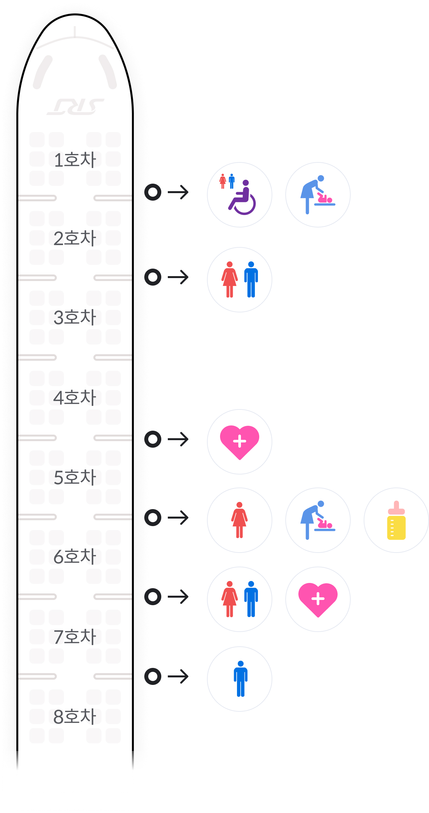

  <!-- 팝업:장애인 좌석옵션 -->
  <div class="btm-popup-wrap full" id="pop-facilities" >
    <div class="pop-wrap">
      <div class="popup">
        <div class="pop-header">
          <strong class="tit">편의시설정보</strong>
          <button type="button" class="btn-close"><i class="ico-close"></i></button>
        </div>
        <div class="pop-body">
          <!-- pop-facilities-wrap -->
          <div class="pop-facilities-wrap">
            
          </div>
          <!-- // pop-facilities-wrap -->
        </div>
        <div class="pop-footer">
          <p class="facilities-txt">11~18호차 편의시설은 1~8호차와 동일합니다.</p>
          <ul class="facilities-info">
            <li><span class="icon"><i class="ico-facilities-restroom"></i></span><span class="txt">화장실</span></li>
            <li><span class="icon"><i class="ico-facilities-handicap"></i></span><span class="txt">장애인석</span></li>
            <li><span class="icon"><i class="ico-facilities-changing"></i></span><span class="txt">기저귀 교환대</span></li>
            <li><span class="icon"><i class="ico-facilities-nursing"></i></span><span class="txt">수유실</span></li>
            <li><span class="icon"><i class="ico-facilities-emergency"></i></span><span class="txt">응급실</span></li>
          </ul>
        </div>
      </div>
    </div>
  </div>    
